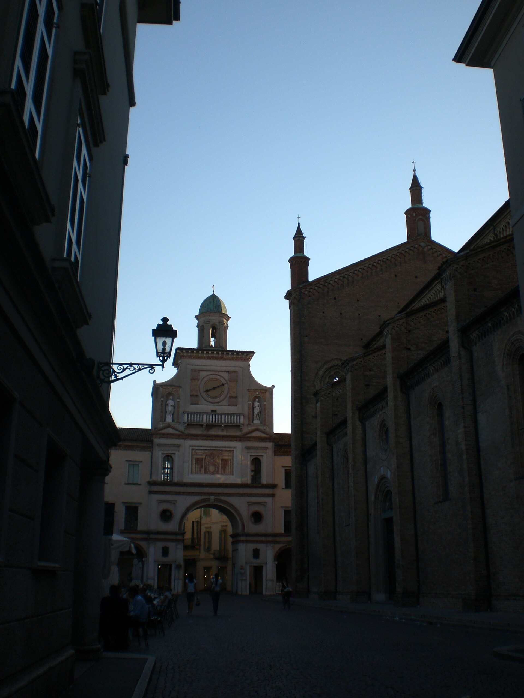

克雷马老城的核心广场：红砖哥特大教堂（1284 年始建）、84 米钟楼与中世纪市政厅围合出的不对称空间。电影《请以你的名字呼唤我》开场镜头在此取景--导演卢卡·瓜达尼诺的故乡广场一夜之间成了全球影迷的坐标。
看点路线
Il Percorso
- 1广场整体构图：教堂立面 + 钟楼 + 市政厅门廊的不对称三角形
- 2找 CMBYN 开场镜头的机位：广场南侧看向大教堂
- 3市政厅（Palazzo Pretorio）门廊：电影里 Elio 骑车穿过的拱门
- 4广场咖啡喝一杯：本地人 aperitivo 的默认场地
广场看点
La Piazza · 4 个细节

大教堂
红砖哥特立面与伦巴第式玫瑰窗：教堂建了三个多世纪--立面的下半哥特、上半文艺复兴，是“工期即风格史”的活标本。内藏 16 世纪壁画与 Giovanni Carrara? 的作品。

钟楼
广场旁的砖砌钟楼--CMBYN 多个镜头的背景主角。电影海报上 Elio 骑车驶过时，它就立在大教堂旁边：一座安静了几百年的塔，突然被全球影迷认了出来。
市政厅门廊
广场东侧的中世纪市政厅：拱廊下的凉荫是电影角色的“必经之路”。中世纪至今它一直是克雷马的行政中心--一个广场的权力轴线六百年没挪过位。
1159：巴巴罗萨的围城
腓特烈·巴巴罗萨围攻并摧毁了克雷马--中世纪伦巴第城市史上最惨烈的围城之一。城市重建后的方济各会与民间重建期塑造了今天的老城肌理：广场的宽窄本身就是“劫后重建”的产物。
历史故事
Le Storie
壹建了三个世纪的教堂
克雷马大教堂（Santa Maria Assunta）1284 年动工、直到 1604 年才正式祝圣--三个多世纪的工期。
工期的直接后果是风格分层：立面的下半是哥特（尖拱与砖雕）、上半是文艺复兴（三角楣与圆窗）。一座教堂同时是两个时代的"接缝"。
贰1159：巴巴罗萨的围城
1159-1160 年，腓特烈·巴巴罗萨（神圣罗马帝国皇帝）围攻克雷马 6 个月--最终破城并大肆摧毁。中世纪伦巴第城市史上最惨烈的围城之一。
克雷马的反抗成为伦巴第同盟（1167 年成立）的导火索之一：1176 年莱尼亚诺战役中伦巴第城市联军击败皇帝--克雷马的牺牲是那场胜利的铺垫。
今天广场的宽度与老城的肌理都是"劫后重建"的产物：一座被摧毁两次（1159 与二战轰炸局部受损? 实际二战克雷马受损较轻）的城市，每次都重新站起来。
叁威尼斯统治的 350 年
1449 年克雷马并入威尼斯共和国（比维罗纳晚 44 年），此后 350 年是"最宁静的共和国"的领土。
威尼斯带来了贸易繁荣与行政制度：克里马的城墙、城门与运河网在此期间成型。1797 年拿破仑终结威尼斯共和国--克雷马的"威尼斯时代"落幕。
这段历史解释了克雷马的城市气质：没有大公国的铺张也没有要塞城市的紧张--一个"安稳过日子"的威尼斯边城。
肆CMBYN 的开场
2017 年《请以你的名字呼唤我》开场镜头扫过主教堂广场：大教堂立面与钟楼构成背景。导演瓜达尼诺选了他自己的故乡做"电影的客厅"。
电影上映后广场成了全球影迷的坐标。克雷马旅游局的回应是出一本免费的 CMBYN 巡礼地图（旅游中心可取）。
伍钟楼的"一日三响"
广场旁的钟楼每天报时。中世纪的钟声曾经是这座小城的"生活节拍器"：晨钟叫醒、午钟歇工、晚钟锁城门。
今天钟声还在，但功能从"时间管理"变成了"氛围营造"。坐在广场咖啡里听到整点钟响--那是这座小城最接近中世纪的时刻。
陆Tortelli Cremaschi：甜的饺子
克雷马的特产 Tortelli Cremaschi 是一种"甜馅方饺"：填了 amaretti（杏仁饼干碎）、Mostaccioloni 饼干碎、葡萄干与香料--在意大利以咸味为主的 tortelli 世界里，这是独一份的甜。
本地餐厅都做，每年 9 月还有 Tortelli 节。这道菜的历史可追溯至文艺复兴时期的"甜咸混搭"烹饪传统。
柒市政厅与拱廊
广场东侧的 Palazzo Pretorio（市政厅）建于 13-14 世纪，拱廊下的凉荫是 CMBYN 里角色骑车穿过的场景。
中世纪至今它一直是行政中心：一个广场的权力轴线六百年没挪过位。克雷马人办证、登记、结婚都来这个拱廊下。
捌小城的"慢"
克雷马人口约 3.4 万：老城步行 20 分钟可穿城。商店午休 13:00-15:30，周日下午大部分关门。
从米兰来的游客第一天最不适应的是"慢"：没有排队、没有拥挤、没有打卡。第二天开始理解：这不是"没效率"，这是"不同的人生节奏"。
玖从 Milan Centrale 出发 50 分钟
米兰中央车站到 Crema 的区域火车（Trenord）约 50 分钟，票价约 €6。从 Bergamo 方向来约 30 分钟。
这使克雷马成为米兰或贝加莫旅行者的"半日逃离"最优解：早上出发、下午回来。如果配 CMBYN 巡礼 + 广场午餐，大半天刚好。
拾广场的日常一天
清晨：面包房飘出的气味与第一个上班族的 espresso；上午：市政厅开门、广场遛狗的老人；中午：餐厅外摆与办公室午餐；下午午休：寂静，只有钟声。
傍晚 aperitivo 时段（18:00-20:00）：广场突然活了，本地人出来喝一杯聊半小时天。晚饭后 passegiata（散步）：绕广场走两圈是几代克雷马人的饭后仪式。
参观贴士
Consigli Pratici
- 从米兰 Centrale 坐区域火车 50 分钟直达--“半天逃离米兰”的最优解
- 广场旁的 Crema Caffè 是 CMBYN 拍摄期剧组常驻地（墙上有签名照）
- 当地特色 Tortelli Cremaschi：甜馅方饺（加了 amaretti 与 Mostaccioloni 饼干）--别处吃不到
- 周日广场有市集，老城最热闹；工作日下午商店午休 13:00-15:30
- Bergamo 方向来的火车 30 分钟--可两城串一日
顺路同游
Da Non Perdere